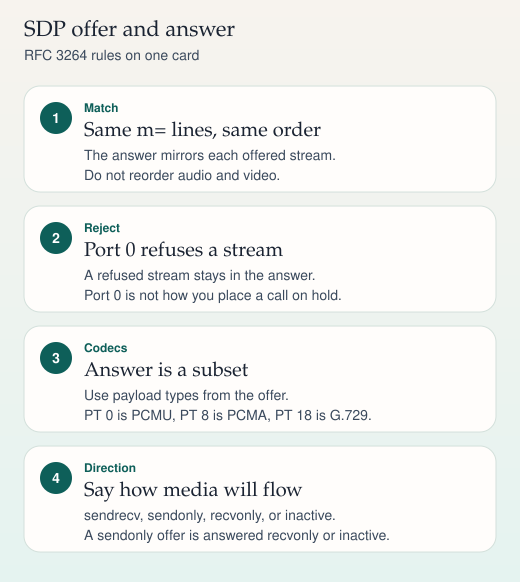

SDP · RFC 3264
Offer and answer
One offer, one answer. A second offer before the answer is a protocol error.
- INVITE + SDP — The offer lists codecs the offerer can receive.
- 200 + SDP — The answer picks a common codec. Port 0 rejects a stream.
- ACK — The offer/answer completes with the 200, and ACK confirms the dialog.
Delayed offer puts the first SDP in the 200, and the ACK carries the answer. Early offer puts SDP in the INVITE. CUCM trunks and CUBE dial-peers must agree which model the next hop requires. 488 means the SDP was rejected.
Sources
Study card carried forward
SDP · RFC 4566 · RFC 3264
Codecs and the offer/answer model
Every media change you have seen — the first call, hold, early media — is an offer and an answer. Learn the m= line once and the other cards get easier.

On a phone, swipe a wide ladder sideways. The steps below repeat the same sequence.
What an SDP session contains
SDP is RFC 4566. An offer and its answer are a use of SDP defined by RFC 3264. The lines you will read on every voice call:
v=protocol version, which is 0.o=origin: username, session id, version, network type, address type, address.c=connection address. It may sit at session level or on a single media line.m=media line: type, port, protocol, then payload types in preference order.a=rtpmapmaps a payload type to a codec name and clock rate.a=fmtpcarries parameters, such as which DTMF events are offered.a=ptimeis the packetization time in milliseconds. 20 is the usual voice default.
A worked offer and answer
Alice offers G.711 µ-law, G.711 A-law, G.729, and named telephone events. She is at 192.0.2.10. Bob answers with PCMU and telephone-event only. He is at 192.0.2.20. Both addresses are documentation addresses (TEST-NET), not a live network.
v=0 o=alice 2890844526 2890844526 IN IP4 192.0.2.10 s=Call c=IN IP4 192.0.2.10 t=0 0 m=audio 49170 RTP/AVP 0 8 18 101 a=rtpmap:0 PCMU/8000 a=rtpmap:8 PCMA/8000 a=rtpmap:18 G729/8000 a=rtpmap:101 telephone-event/8000 a=fmtp:101 0-15 a=ptime:20 a=sendrecv
v=0 o=bob 2808844564 2808844564 IN IP4 192.0.2.20 s=Call c=IN IP4 192.0.2.20 t=0 0 m=audio 49200 RTP/AVP 0 101 a=rtpmap:0 PCMU/8000 a=rtpmap:101 telephone-event/8000 a=fmtp:101 0-15 a=ptime:20 a=sendrecv
The answer has one m= line because the offer had one, in the same place. Bob did not invent a video line. He did not answer with a codec Alice omitted. Payload 101 is dynamic: the number is meaningless until rtpmap names it. Telephone-event is RFC 4733, the modern home of RTP DTMF (it replaced RFC 2833).
Static payload types you should know
| PT | Name | Clock | Usual payload rate |
|---|---|---|---|
| 0 | PCMU (G.711 µ-law) | 8000 | 64 kbit/s |
| 8 | PCMA (G.711 A-law) | 8000 | 64 kbit/s |
| 9 | G722 | 8000 in RTP, audio is 16 kHz | 64 kbit/s |
| 18 | G729 | 8000 | 8 kbit/s |
| 96–127 | Dynamic | Named by rtpmap | Depends on the codec |
Opus (RFC 7587) uses a dynamic payload type. The number is negotiated. There is no universal Opus payload type.
G.722's rtpmap clock is 8000 even though the audio bandwidth is 16 kHz. That oddity is in the RTP audio/video profile (RFC 3551). Do not "correct" it in a gateway and break interop.
Rejecting a stream
If Alice also offers video and Bob cannot do video, Bob still answers with two m= lines. The video line uses port 0. The audio line is negotiated as usual. Dropping the m= line instead of zeroing the port shifts every later line and breaks the answer.
Direction rules that show up constantly:
- sendrecv may be answered with sendrecv, sendonly, recvonly, or inactive.
- sendonly is answered with recvonly or inactive.
- recvonly is answered with sendonly or inactive.
- inactive is answered with inactive.
The payload rate is not the bandwidth you plan on a link. A G.711 call at 20 ms is 50 packets per second, 160 bytes of audio each, plus RTP, UDP, IP, and Ethernet. A common Ethernet planning estimate is about 87 kbit/s per call. G.729 at 20 ms is often planned around 31 kbit/s. Those figures include framing. They are estimates for capacity planning, not codec definitions.
Sources
- RFC 4566, SDP
- RFC 3264, an offer/answer model with SDP
- RFC 3550, RTP
- RFC 3551, RTP audio/video profile (static payload types, including G.722's clock rate)
- RFC 4733, RTP payload for DTMF digits and telephony tones
- RFC 7587, RTP payload format for Opus
- RFC 3711, SRTP, and RFC 4568, SDES